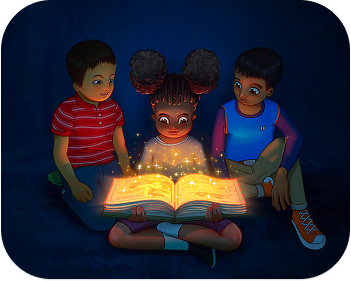

StoryAI

Project Overview
Client
The client is a large institution within the education sector, specializing in children’s literature and education.
Background
The client engaged our team to explore how generative AI could be leveraged to create a digital reading experience for their users. As digital products and services continue to grow rapidly, they saw a need to adapt their traditional content to new formats. The goal was to find meaningful ways to combine storytelling and learning with modern digital tools, while keeping the experience engaging and accessible for children.
Project Summary
We designed and built a mobile app that lets parents generate personalized, AI-powered children’s
stories in seconds. Parents enter a character name, setting, and plot — the app handles the rest,
producing age-appropriate stories with interactive choice moments that let kids shape how the
narrative unfolds. Built with React Native, Firebase, and OpenAI’s API, the solution proved to
significantly increase children’s attention and engagement compared to traditional reading.
The design process was grounded in user research — interviews with parents surfaced the core
problem of children’s short attention spans, which directly shaped our design direction. Through
collaborative ideation, iterative prototyping, and A/B testing, we refined the experience into
something intuitive for parents and genuinely engaging for kids.

Duration
10 weeks
100%
Role
UX Design
UI Design
Tools
Figma
React Native
JavaScript